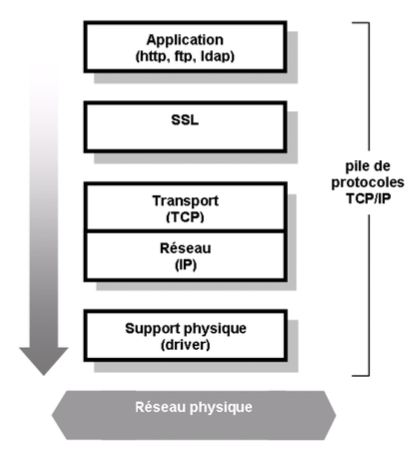
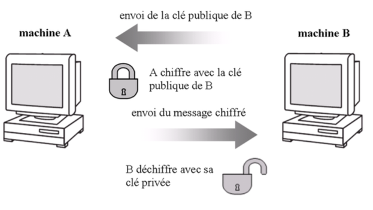

La plus grosse partie du chapitre est dédiée à la confidentialité des mots de passe utilisés pour s’authentifier auprès du serveur LDAP. En effet, depuis sa version 3, LDAP offre une confidentialité des échanges à travers le support d’une couche de sécurité. Les messages LDAP ne sont plus transmis tels quels mais sont véhiculés via le protocole SSL (Secured Socket Layer).
Issu du monde Internet, SSL est un protocole réseau permettant de sécuriser les échanges entre un serveur et un client. Créer par Netscape en 1994, il est normalisé par l’IETF en 1999 sous le nom de TLS (Transport Layer Security).
Situé entre la couche applicative et la couche de transport de la pile de protocole TCP/IP, SSL a la caractéristique d’être indépendant du protocole applicatif utilisé. Ainsi, l’usage de SSL avec des protocoles comme http, ftp, smtp et ldap est possible. La figure 4.1 illustre ce principe.

Fig. 4.1 - La couche SSL
L’utilisation du protocole SSL comme couche de sécurité garantit :
Avant de regarder de plus près le fonctionnement de SSL, quelques explications élémentaires sur les différentes techniques employées en cryptographie s’imposent.
Pour assurer la confidentialité des données, l’émetteur chiffre le message et le récepteur le déchiffre à l’aide d’une clé. Deux algorithmes de chiffrement existent :
le chiffrement symétrique : le récepteur et l’émetteur utilisent la même clé pour chiffrer et déchiffrer les messages. Cette clé est appelée clé secrète. Les plus connus des algorithmes symétriques sont sans doute DES (Data Encryption Standard) et TripleDES.
le chiffrement asymétrique : cette méthode est basée sur l’utilisation d’une clé publique (pour le chiffrement) et d’une clé privée (pour le déchiffrement). Le message chiffré avec la clé publique ne peut être déchiffré qu’avec la clé privée. Ainsi, si A veut transmettre un message à B, il se procure la clé publique de B qui est utilisée pour chiffrer le message. B reçoit ensuite le message qu’il déchiffre avec sa clé privée. B étant le seul à posséder la clé privée, il est le seul à pouvoir déchiffrer le message de A (voir figure 4.2). L’algorithme asymétrique RSA (R.Rivest, A.Shamir & L.Adleman) est l’algorithme asymétrique le plus répandu.

Principe du chiffrement asymétrique
L’intégrité des données est basée sur le calcul d’un message digest obtenu par une fonction de hachage sur le message à envoyer. Un message digest est une valeur de taille fixe, unique et spécifique à un message. Son calcul permet de définir une sorte d’empreinte digitale du message. L’intégrité d’un message est vérifiée en comparant le digest calculé par l’expéditeur et le digest calculé par le récepteur. Si les deux valeurs coïncident, le message n’a pas été modifié lors de sont transfert. Les algorithmes de message digest les plus courants sont MD5 (Message Digest 5) et SHA (Secure Hash Algorithm).
Les MAC (Message Authentication Code) permettent l’intégrité des données mais également l’authentification. Il existe trois types de MAC :
L’utilisation de signatures digitales permet de s’assurer de l’intégrité d’un message et de l’authentification de l’émetteur. Une signature digitale est construite en deux étapes :
Le message et la signature associés sont envoyés au récepteur qui procède de la sorte :
Les algorithmes asymétriques étant basés sur le partage de clés publiques, il est primordial de s’assurer de leur validité. Pour cela, il est possible d’obtenir un certificat attestant l’appartenance d’une clé publique. Ce certificat, signé par une autorité de certification (CA ou Certification Authority) reconnue de tous, garantira que la clé publique apparient bien à une personne. Un certificat contiendra essentiellement :
Une fois que le certificat et la clé publique qu’il contient sont obtenus, il faut encore valider ce certificat. Ceci est fait en vérifiant la signature digitale du CA comme expliqué plus haut. La seule contrainte est de posséder la clé publique du CA.
Pour établir une session SSL, le client et le serveur doivent passer par différentes étapes. Elles sont reprises et expliquées ci-dessous :
L’avantage de SSL est sa transparence par rapport au protocole TCP et son indépendance par rapport aux applications qui l’utilisent. Ainsi, de nombreux protocoles non sécurisés s’appuient sur SSL pour offrir une version sécurisée. Le tableau suivant fournit quelques exemples de protocoles non sécurisés et leur version sécurisée.
| protocole | port | version sécurisé | port |
|---|---|---|---|
| http | 80 | https | 443 |
| ftp | 21 | ftps | 990 |
| telnet | 23 | telnets | 992 |
| imap | 143 | imaps | 993 |
Tab. 4.1 - Protocoles sécurisés
Le protocole SSL est également utilisé pour sécuriser une session LDAP. L’usage de LDAP sur SSL est appelé LDAPS et utilise le port 636 au lieu du port 389 (LDAP non sécurisé). L’inconvénient de LDAPS est qu’il est impossible d’avoir des connexions sécurisées et non sécurisées sur le même port (le 389 par exemple). Pour cela, LDAPv3 à introduit une nouvelle extension : StartTLS. Cette commande permet de négocier l’utilisation de sessions sécurisées ou non sur le port standard 389. Les différentes étapes pour mettre en oeuvre SSL avec LDAP sont décrites ci-dessous :
Une fois que le client et le serveur LDAP sont configurés pour utiliser SSL, le client peut contacter le serveur et négocier une session sécurisée avant de s’authentifier. Ainsi, l’identifiant et le mot de passe sont protégés et ne transitent plus en clair sur le réseau.